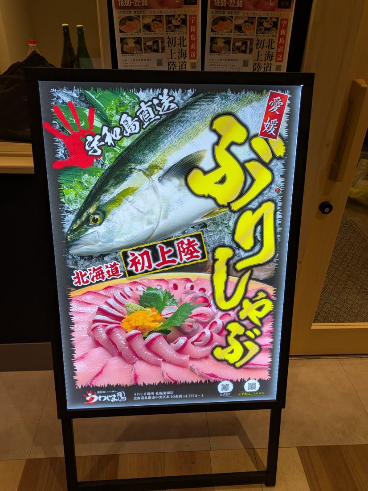

オープンしました！うわじま場所 札幌桑園店

2026年11月16日（月）、「鰤しゃぶと鯛めし うわじま場所 札幌桑園店」がオープンしました‼️ 愛媛・宇和島直送の鰤と鯛が、ついに北海道初上陸です。
看板メニューは「鰤しゃぶ」と「鯛めし」。ランチは10:30から。まずは鯛めし食べ比べ御膳と、胡麻ぶり定食がおすすめです。
開店前の試食から
オープンに先立って、ごま鰤と鰤刺身、鰤しゃぶを試食しました。ごま鰤は愛媛の甘口醤油がおすすめ。鰤しゃぶはネギの布団で包んで、出汁と口の中で合わせる食べ方です。味変のおすすめはブラックペッパーです。
ランチメニュー
お店の情報
| 店名 | 鰤しゃぶと鯛めし うわじま場所 札幌桑園店 |
|---|---|
| オープン | 2026年11月16日（月） |
| 営業時間 | ランチ 10:30〜13:30／ディナー 16:00〜22:00 |
| 住所 | 〒060-0010 北海道札幌市中央区北10条西14丁目2-1 ソウエンBRIDGE |
| 電話 | 070-9149-5319 |
桑園にお越しの際は、ぜひお立ち寄りください。北海道の皆さんに、宇和島の鰤と鯛の美味しさが届きますように。
← トップページへ戻る